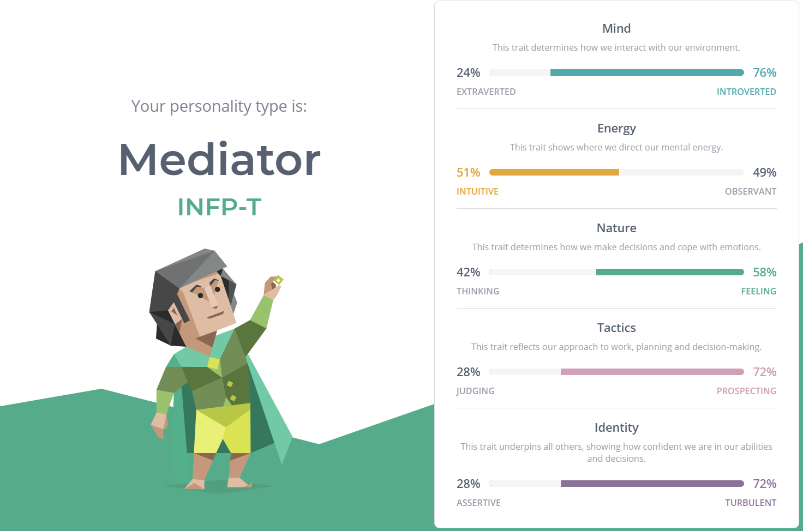
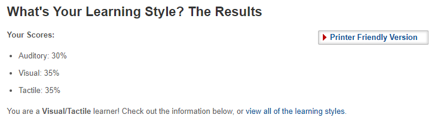
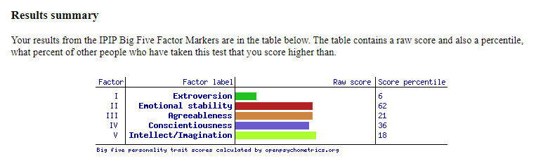

For you to get to know me better and for a chance to learn more about myself I have completed 3 online tests! Look at the results down below!



As I read about being a Mediator, I felt a sense of self-realisation occur. I felt something click within me. I have never been good with words and explaining myself so when I read about the type of person I was. It was entirely accurate. It's not something I’m going to use to excuse my behaviour or the way I act, it was just nice to read about myself and for it to make sense. It has helped to accept the way I am. There is no right or wrong personality. No right or wrong way to be. This test puts how I think, feel, am into words and I am grateful.
Finding out that I am a visual and tactile learner is not surprising to me. Growing up, I knew it was a lot easier to learn and understand something if I just did it by myself. I guess by physically doing something and experiencing I was able to learn it quicker than if people just told me to do it. Being a tactile learner means as we go into more rote learning, I will struggle but when we go into more practical work, I feel like I will excel.
The Big Five Personality test results weren't surprising in the least, but I think the results of tests like this and other “personality-type” tests should be taken with a grain of salt. I don’t think a test like this can 100% accurately depict all a person's personality traits and behaviours. There will be always be some of the description that, when you read it, you think, “thats not really me” so you skim over it until you find something that you do relate with. However, they are still great for seeing a glimpse into the type of person you are.
The website is called 16personalities.com so I'm sure there's no shortage of types of people that exist in this world. People are different and are the product of their surroundings, culture, nationality, where they grew up, memories they had, experiences and all the in between. My results mean I bring some strengths to a team, but it also means I bring some weaknesses and I accept that. I may not always agree with or get along with my team, but I hope that our collective strengths mask each other weaknesses.
I don’t think being a visual/tactile learner will affect my behaviour in a team. Learning style has no bearing on what you bring to a team and I believe being able to learn in different ways will also help with teaching people who aren't as strong in topics I am strong in and vice versa, them being able to help me in areas I struggle in.
Knowing your personality is a great helper in forming teams as you want people in your team you think you might do well with. Obviously, you won't always get what you want but keeping in mind that different personalities offer strengths and weaknesses will be very helpful in forming a team that will work together to complete the mission. A group of people who do things doesn’t make a team. A team is made up of different personalities and meshing to form a cooperative unit and covering for each other's weaknesses with one's strengths.